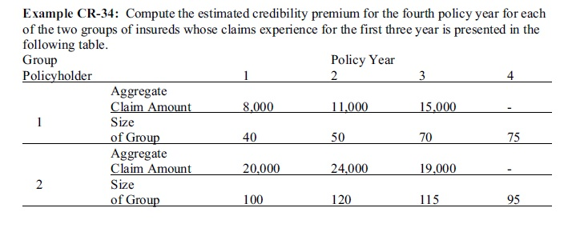
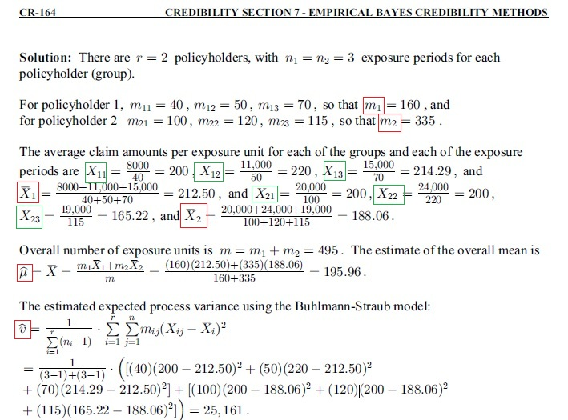
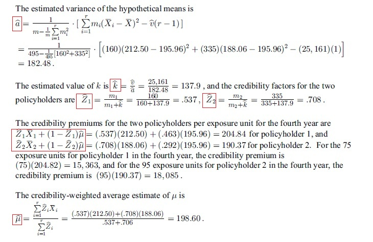
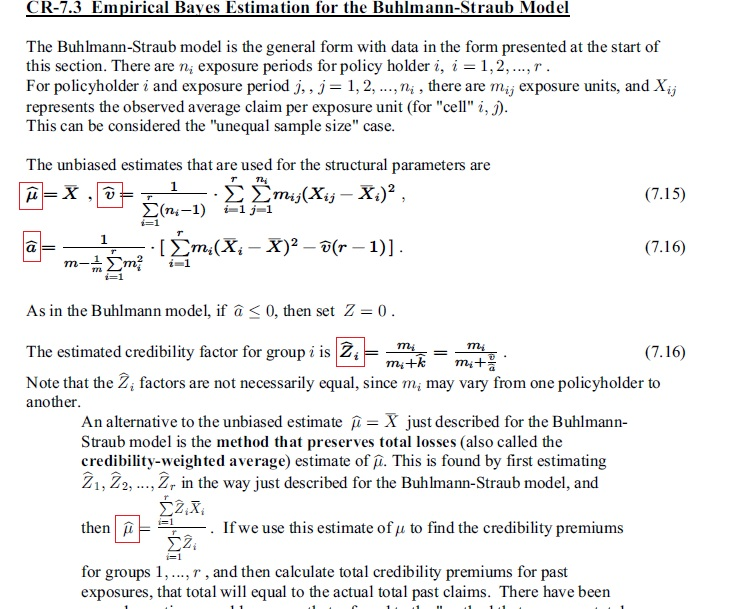

經驗貝氏信度模型(Empirical Bayes Estimation for the Buhlmann-Straub Model)
更新寫日期: 2015年2月11日
程式需要在 REG Lin 模式下執行，因此在選擇新程式位置後，按 5 1 選用REG Lin模式。
注意 : 藍色的英文字為統計模式中的變數( n 按 Shift 1 3， Σx 按 Shift 1 2， Σx2 按 Shift 1 3，Σy 按 Shift 1 → 2，σx 按 SHIFT 2 1 2，x為平均x 按 shift 2 1 1)，FreqOn 按 Shift MODE ← ← 1。
程式 (222 bytes)
FreqOn: 0→M: ?→A: 0→C: Lbl 0: 0→D: Rec( 0, 0:
While A: ?→B: X + A→X: Y + B→Y: C + B2÷A→C:
D - 2B→D: 1 + M→M: B÷A→A: ?→A: WhileEnd:
X◢ Y÷X→Y◢ Ans , X ; X DT: M - 1 + E-9→M:
C + DY + XY2→C: ?→A: A => Goto 0: x→X◢
Fix 0: Rnd(M→A: Norm 1: C÷A→Y◢ E9(M - A→M:
n σx 2 - YM + Y: Ans ÷ (n - n-1Σy◢ Y ÷ Ans→C◢
ClrStat: While M: M - 1→M: ?→A: ?→B: A ÷ (A + C→D◢
B ; D DT: BD + X - XD◢ WhileEnd: x

Press Prog 1
40 EXE 8000 EXE (read-out: A? and 200)
50 EXE 11000 EXE (read-out: A? and 220)
70 EXE 15000 EXE (read-out: A? and 214.2857143)
0 EXE (0 represent end of first group, read-out: 160)
EXE (read-out: 212.5)
EXE 100 EXE 20000 EXE (read-out: A? and 200)
120 EXE 24000 EXE (read-out: A? and 200)
115 EXE 19000 EXE (read-out: A? and 165.2173913)
0 EXE (0 represent end of second group, read-out: 335)
EXE (read-out: 188.0597015)
EXE 0 EXE (0 represent No other group, read-out: 195.959596)
EXE (read-out: 25163.73876)
EXE (read-out: 182.4695929)
EXE (read-out: 137.9064772)
EXE 160 EXE 212.5 EXE (read-out: 0.537081306)
EXE (read-out: 204.8431378)
EXE 335 EXE 188.0597015 EXE (read-out: 0.708385306)
EXE (read-out: 190.3634268)
EXE (read-out: 198.5990667)


Reference:

返回 CASIO fx-50FH、fx-3650P II、fx-50FH II及fx-50F PLUS 程式集